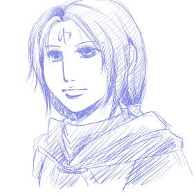

- 2008.12.11 Thursday
拍手レス12/8・12/10分です。ありがとうございます！！
12/8分は本館の方にいただいた拍手でしたが、かなりこっちむきなのでこちらにてレスです〜。
その前にちょろっと雑多な語りを…

なんだこれはっていう感じですが、にょたセネリオです！
このサイトはにょた全般を扱っていきたいので唐突にアイク以外のキャラも女体化したイラストがのっかることがあります。っていうかセネリオだったら別ににょたっていわなくても通るかもしれないね…。違和感がなさ過ぎる。というか、よっぽど女らしく描かないと男の場合との違いがわからない。
突然変な電波が降ってきたんですよ。
セネリオ♀×アイク♀の百合もいい！！！
という。
普通にやおいでセネアイじゃあかんのか、っていう気がしますが…やっぱり体格差とかクリアするべきハードルが結構あるというか。ホモの場合でセネアイだと筋肉成分が少ないので個人的にそこまで…という感じなのです。あと、セネリオが薬とか持ち出したりとか相当イッてしまってないとアレですね。
しかし！ 百合にすると一変！
二人で風呂に入っているだけでも萌えまくり！ なんだこれは！
もともと私はセネリオは女の子だったら萌えるのに…と思っているので、それがにょたあいくと絡むとおっぱいの分萌え倍増です。なんか、この関係性は女の子同士だと秘密の花園的なあやしさがアップしてきますね…。セネリオがアイクを女神的に崇拝してるといいよ！ でも自分は貧乳でおっぱい大きめなアイクをうらやましがるといいよ！
…はあ、まったく変な電波だ。困ったね。いつかイラストでも描こう。
あと、もう一ついやな電波を受信しました。
ティバーン♀×アイク♀もいい！
という。
いや、あの…普通にティバーン男でにょたあいくに絡むと5秒で妊娠しそうって前に書いたんですが、それならティバーンを女体化したらアイクは妊娠しないよ！ ティバーンもラグズの力失わないよ！ めでたしめでたし！ …あれ？
なんか根本的に間違っている気がしますが、細かいことは気にしない！
とするとキャラ的にウチのティバアイのパターンでいくとティバ♀はヘザーさん的なキャラになってしまいそうなんですが、ティバ♀は種の保存のため自分より強い男にしか体を許さないので純潔だけど女の子には手を出しまくりで自分より強い男は今までに出会っていないということでよろしく。んで、アシュナードだのアスタルテだのを倒してしまったのがにょたあいくなものだから…惚れてしまってさあ大変、みたいな。
いやあ、怪電波を発してすいません。吐き出したらすっきりしました。
…普通にティバーンが男でアイクに子供生ませまくってもいいんですが。
コロニー形成しようぜ、がプロポーズの言葉。この…鳥め！！
あと、本館でシノアイについてふれていますが、アイクが女の子だったら俄然シノアイはかきやすいです！！ しかもかなりシリアスなネタ思いついちゃったりした！ いつかがっつり書くぞ！！ あ、シノンは男ですよ。
ライアイも普通にライが男の場合のが萌える〜。
なんつーか、普通に性別そのままにして萌える場合と変えて萌える場合があるようです、私的に。
というわけでようやくレスです…すいません… >桃里さん！
にょたネタへの食いつき、ありがとうございます！（笑）
おっぱいトーク…これはぜひ生で語りたいですね。おっぱいなだけに…。
2月の聖戦、一般参加しますよ！ もう飛行機とホテル予約してきました！ 前日入りする気満々です！ ちゃんと休みを申請しないと確定できないのですが、まあ大丈夫かなと。
ぜひまた前日にwithタカムラさんで遊びましょうｖｖ
コススタ…ってググってきたんですが、コスプレスタジオですか！ 撮影会…！ そうなると他のレイヤーさんもいらっしゃるといいですね〜。私はカメコしますよ！ つか、にょたコス！？ おっぱいアイクですね、わかります。衣装作り頑張ってください！ アイク4人集合が見られるかと思うと今からﾊｱﾊｱしております…！
そしてにょたサイト開設お祝いありがとうございますｖｖ
そちらのサイトを筆頭としてリンクを貼らせていただきました（笑） そちらのにょた部屋の開設を心待ちにしております…！
本館拍手でのおっぱいトークありがとうございます（笑）
安産体型でDカップのアイクをおほめにいただき嬉しいです！ 丈夫な子を産んでくれそうですね…。アスリート系だから体が丈夫！ お目当ての皆さん、おっぱい派と尻派に分かれたりして…。
女性陣のカップ数…そのくらいですよね！ ニケ様はもう爆乳って感じで…。
ちびっ子たちがアイクに抱きしめられてドキドキ…ネタもかわいい！ そこから性の目覚め…とかそういうネタも無きにしも非ず（笑） ていうかサナキ様まで！ とするといつもはサナキ様は隊長のおっぱいに篭絡されているってことですね（笑）
ハール隊長とティバーンはおっぱい星人…！ ありそう。本編でもなんかシグルーンとかそのあたりはいい女とか言ってた描写なかったかな…。ライは美乳派ですね、なるほど…！ うなじフェチでもあったらいいなとも思います（におい嗅ぐ的に） フォルカは感度…さすがムッツリ！！（勝手に認定）
というわけで…そちらのサイトのコメレスともにありがとうございました！